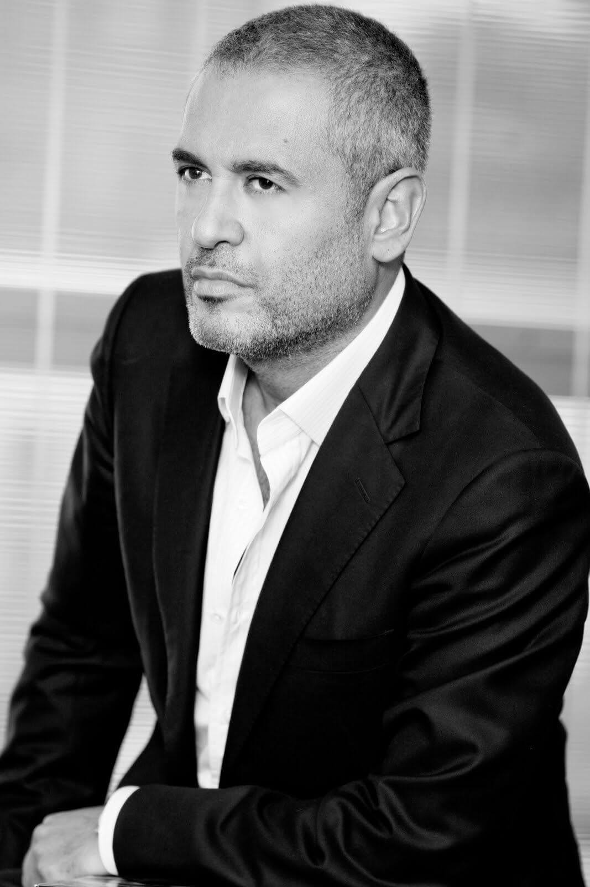
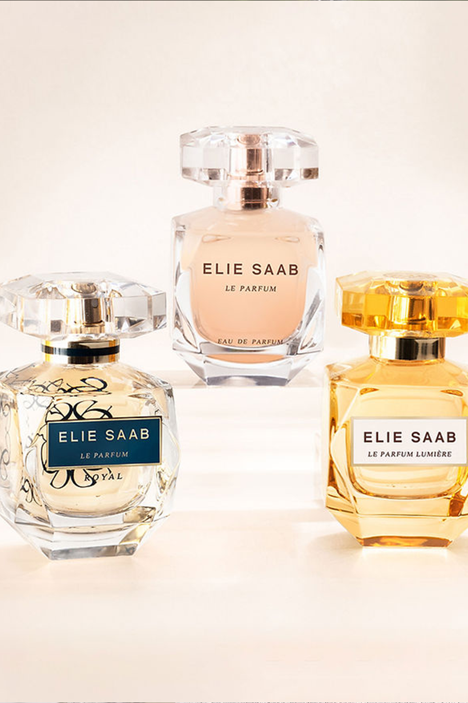

- 

- 
Achtergrond informatie
Elie Saab is een Libanese modeontwerper en staat onder andere bekend om zijn details met daarin veel gebruik van parels en diamanten. Op jonge leeftijd, vanaf 9 jaar oud maakte hij al kleding voor zijn zussen en daarna voor de verkoop. Op zijn 17e ging hij naar Parijs voor de studie mode. En openende een jaar later al zijn eerste modeatelier in Beiroet. Hij had daar 12 mensen voor hem werken en presenteerde een aantal maanden later zijn eerste mode collectie. In 1997 werd Elie Saab lid van de Camera Nazionale della Moda in Italie en toonde in hetzelfde jaar zijn collectie in Rome. Later volgde ook Milaan en Monaco. De echte wereldbekendheid kwam in 2002 nadat een van zijn creaties bekend werd doordat dit gedragen werd bij de Oscar uitreiking door de in dat waar winnende beste actrice, Hale Berry. In 2007 opende hij zijn eerste boetiek in Parijs.
Het eerste parfum van Elie Saab werd gelanceerd in 2011. Elie Saab Le Parfum is samengesteld als “ode aan het licht en viert de pracht en glans van een stralende vrouwelijkheid.” De geur is zeer vrouwelijk en heeft een bloemige geur van onder andere oranjebloesem, jasmijn en andere zonnige geuren. De basis van Le Parfum bestaat uit patchoeli en cederhout. Elie Saab nodigt met zijn eerste parfum alle vrouwen uit “om een beetje meer betoverend te worden.” Dit maakt Le Parfum daarom zeer geschikt om ’s avonds te dragen bij gelegenheden.
Koop deze parfum